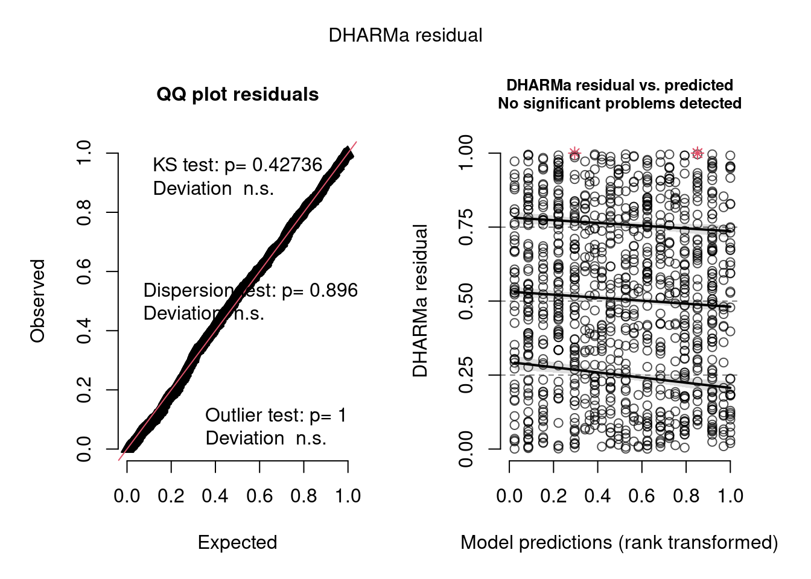
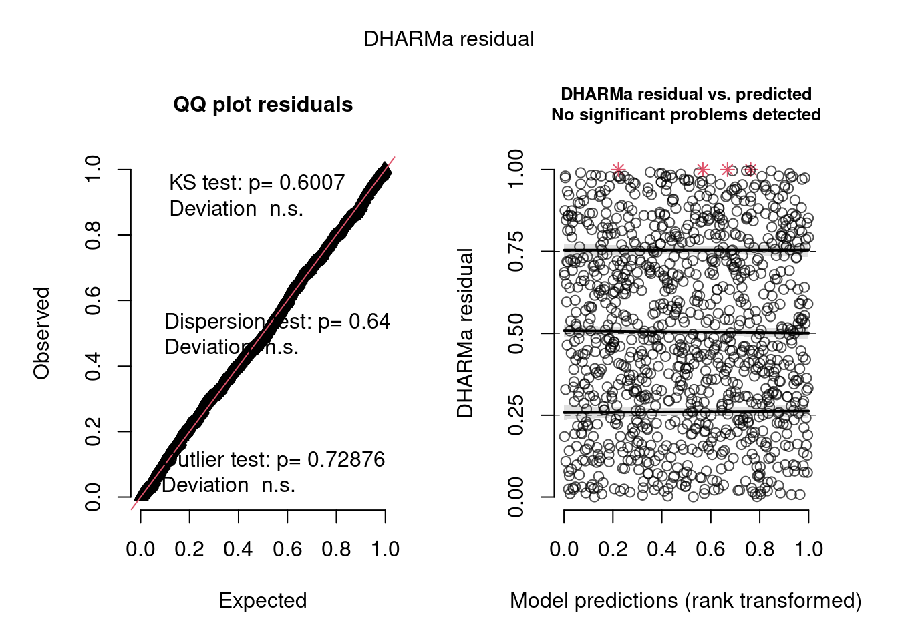
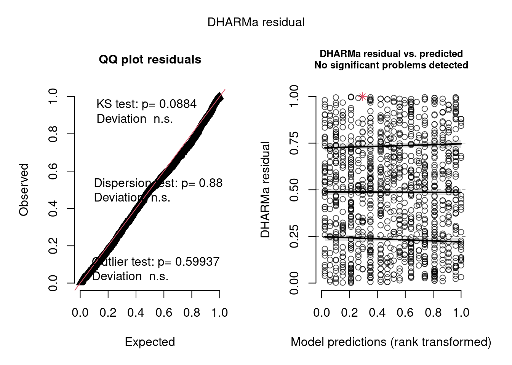
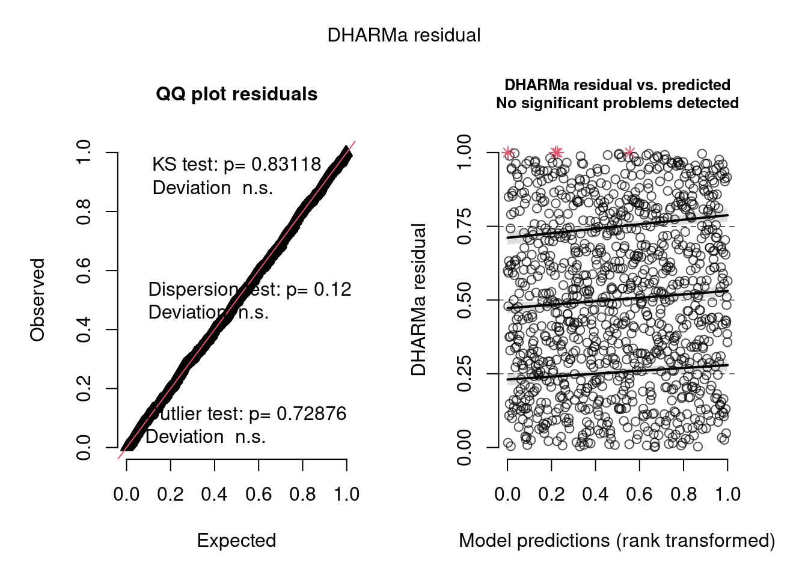
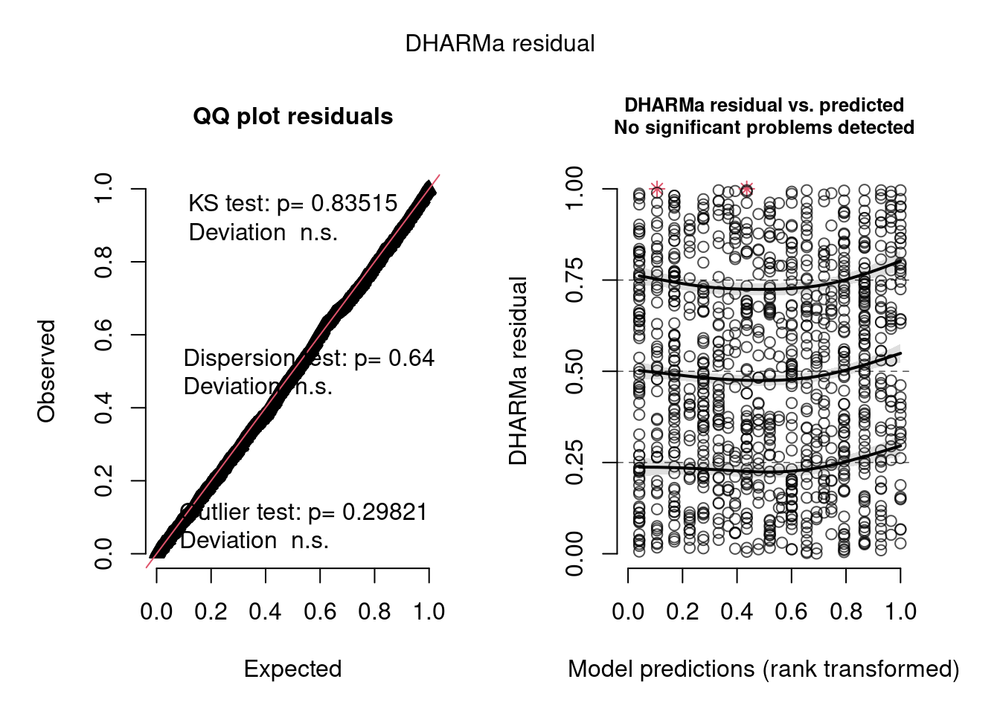
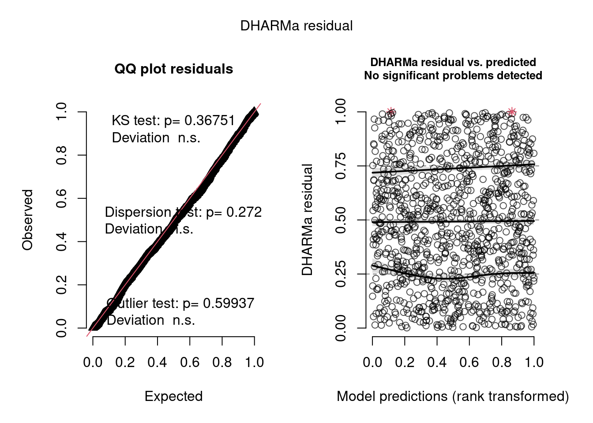
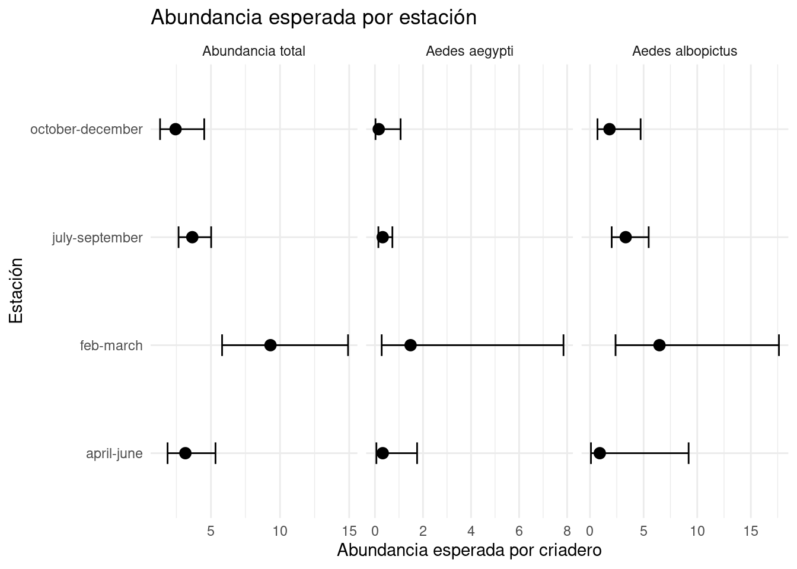
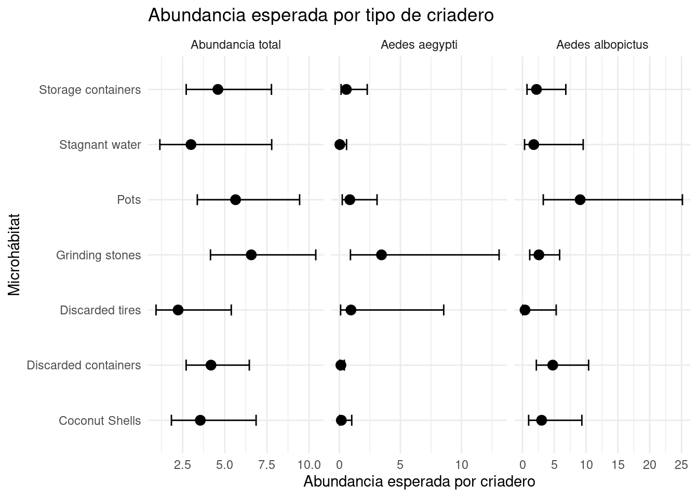

library(readxl)
library(dplyr)
library(tibble)
library(knitr)
library(glmmTMB)
library(DHARMa)
library(emmeans)
library(DiagrammeR)
library(ggplot2)Modelado de abundancia de mosquitos Aedes
https://strengejacke.github.io/sjPlot/articles/plot_model_estimates.html
Introducción
Este archivo documenta el proceso de modelado de abundancia de mosquitos en criaderos urbanos, a partir de datos del estudio sobre ecología de larvas de Aedes en Bengaluru, India.
El análisis se centra en tres respuestas de abundancia:
Total mosquito emergedAedes aegyptiAedes albopictus
Como las respuestas son conteos, se comparan modelos Poisson, binomial negativa y binomial negativa inflada en ceros. La comparación inicial sirve para decidir qué familia representa mejor los datos. Luego se separan dos líneas de análisis:
- un modelo de macrohábitat, que mira el contexto general o tipo de ambiente urbano;
- un modelo de microhábitat + condiciones del criadero, que mira el tipo de recipiente y sus condiciones internas.
La idea no es elegir un único “modelo ganador” mezclando preguntas distintas. El macrohábitat y el microhábitat representan escalas biológicas diferentes. Por eso se modelan por separado y se diagnostican por separado.
Además, como las grillas tipo Index fueron relevadas en distintas estaciones, se incluye Grid_no como efecto aleatorio para representar la dependencia entre observaciones de una misma grilla.
Carga de paquetes y datos
La ruta debe ajustarse al directorio donde se encuentre la base aedes_data.xlsx.
ruta_datos <- "aedes_data.xlsx"
datos <- suppressWarnings(
read_excel(ruta_datos)
)
dim(datos)[1] 8772 44Preparación de los datos
Antes de ajustar modelos se define la base que se va a usar para presencia y abundancia. Esta parte es importante porque las decisiones de filtrado modifican qué observaciones entran al análisis.
Selección de grillas Index
Se trabaja con las grillas tipo Index, porque son las que fueron relevadas en distintas estaciones. Esto permite analizar la abundancia y presencia considerando la estructura temporal del muestreo.
Revisión de log volume
Antes de filtrar, se revisa la variable log volume, porque es central para decidir qué observaciones deben quedar dentro del análisis de abundancia.
summary(datos$`log volume`) Min. 1st Qu. Median Mean 3rd Qu. Max.
0.0000 0.0000 0.0000 0.4398 0.0000 6.3010 sum(is.na(datos$`log volume`))[1] 0datos |>
filter(`log volume` == 0) |>
count(`Final volume water(ml) without cm`, `log volume`)# A tibble: 1 × 3
`Final volume water(ml) without cm` `log volume` n
<dbl> <dbl> <int>
1 0 0 7458Aunque matemáticamente log(1) = 0, en esta base los valores log volume = 0 no corresponden a criaderos con 1 ml de agua. Al revisar la variable de volumen original, se observa que el menor volumen positivo registrado es mayor que 1 ml. Por eso, los valores log volume = 0 se interpretan como criaderos secos o sin volumen útil para el análisis.
Estos criaderos secos son ceros estructurales evidentes: si no hay agua, no puede haber larvas. Por ese motivo se excluyen antes del modelado.
Sin embargo, luego de filtrar los criaderos secos, entre los criaderos con agua todavía pueden quedar ceros. Por ejemplo, puede haber agua pero no larvas por condiciones de temperatura, pH, tipo de criadero, estacionalidad u otros factores no medidos. Esta situación justifica explorar modelos inflados en cero.
Revisión de las categorías de microhábitat
También se revisa la cantidad de observaciones por categoría de Microhabitat. En un estudio observacional no se espera que todas las categorías estén balanceadas. En una ciudad, algunos criaderos aparecen mucho más que otros. El problema no es el desbalance en sí, sino tener categorías con muy pocas observaciones, porque pueden generar estimaciones inestables y difíciles de interpretar.
datos |>
filter(
Grid_type == "Index",
`log volume` > 0
) |>
group_by(Microhabitat) |>
summarise(
n_obs = n(),
total_mosquitos = sum(`Total mosquito emerged`, na.rm = TRUE),
ceros = sum(`Total mosquito emerged` == 0, na.rm = TRUE),
prop_ceros = mean(`Total mosquito emerged` == 0, na.rm = TRUE),
.groups = "drop"
) |>
arrange(n_obs)# A tibble: 9 × 5
Microhabitat n_obs total_mosquitos ceros prop_ceros
<chr> <int> <dbl> <int> <dbl>
1 Tree holes 5 4 4 0.8
2 Plant axils 9 6 6 0.667
3 Discarded tires 30 28 23 0.767
4 Stagnant water 49 32 39 0.796
5 Grinding stones 70 172 44 0.629
6 Coconut Shells 82 84 64 0.780
7 Storage containers 169 226 127 0.751
8 Pots 209 136 182 0.871
9 Discarded containers 443 334 399 0.901Al revisar Microhabitat, vimos que Tree holes y Plant axils tienen muy pocas observaciones. Por eso decidimos eliminarlas antes del modelado. Con tan pocos datos, esas categorías podían generar estimaciones poco confiables.
Creación de la base de modelado
A partir de estas decisiones se crea datos_mod, que será la base usada para los modelos de abundancia.
datos_mod <- datos %>%
filter(
Grid_type == "Index",
`log volume` > 0,
!Microhabitat %in% c("Tree holes", "Plant axils")
) %>%
select(
Prevalence,
`Total mosquito emerged`,
`Aedes aegypti`,
`Aedes albopictus`,
Season,
Temperature,
pH,
`log volume`,
Macrohabitat,
Microhabitat,
Grid_no
) %>%
mutate(
Season = as.factor(Season),
Macrohabitat = as.factor(Macrohabitat),
Microhabitat = as.factor(Microhabitat),
Grid_no = as.factor(Grid_no)
) %>%
droplevels()
dim(datos_mod)[1] 1052 11str(datos_mod)tibble [1,052 × 11] (S3: tbl_df/tbl/data.frame)
$ Prevalence : num [1:1052] 0 1 1 0 1 0 0 0 0 0 ...
$ Total mosquito emerged: num [1:1052] 0 16 4 0 0 0 0 0 0 0 ...
$ Aedes aegypti : num [1:1052] 0 16 0 0 0 0 0 0 0 0 ...
$ Aedes albopictus : num [1:1052] 0 0 4 0 0 0 0 0 0 0 ...
$ Season : Factor w/ 4 levels "april-june","feb-march",..: 2 2 2 2 2 2 2 2 2 2 ...
$ Temperature : num [1:1052] 28.2 30.2 30.2 27.3 28.5 26.9 26.1 30.4 29.3 30 ...
$ pH : num [1:1052] 8.4 7.2 7.2 6.9 6.8 7.9 7.5 8.3 7.7 8.2 ...
$ log volume : num [1:1052] 2 2.7 2.7 5.18 5.18 ...
$ Macrohabitat : Factor w/ 6 levels "Barren Land",..: 3 3 3 3 3 3 3 6 6 6 ...
$ Microhabitat : Factor w/ 7 levels "Coconut Shells",..: 1 4 4 6 6 7 7 2 2 4 ...
$ Grid_no : Factor w/ 48 levels "1","2","3","4",..: 14 14 14 14 14 14 14 23 23 23 ...Controlamos cómo quedó la distribución de Microhabitat luego del filtrado.
datos_mod %>%
group_by(Microhabitat) %>%
summarise(
n_obs = n(),
total_mosquitos = sum(`Total mosquito emerged`, na.rm = TRUE),
ceros = sum(`Total mosquito emerged` == 0, na.rm = TRUE),
prop_ceros = mean(`Total mosquito emerged` == 0, na.rm = TRUE),
.groups = "drop"
) %>%
arrange(n_obs)# A tibble: 7 × 5
Microhabitat n_obs total_mosquitos ceros prop_ceros
<fct> <int> <dbl> <int> <dbl>
1 Discarded tires 30 28 23 0.767
2 Stagnant water 49 32 39 0.796
3 Grinding stones 70 172 44 0.629
4 Coconut Shells 82 84 64 0.780
5 Storage containers 169 226 127 0.751
6 Pots 209 136 182 0.871
7 Discarded containers 443 334 399 0.901Estandarizacón de variables
Las variables continuas se estandarizan para facilitar la comparación entre efectos. En los modelos, un cambio de una unidad en estas variables representa un cambio de una desviación estándar en la variable original.
datos_mod <- datos_mod %>%
mutate(
temp_std = as.numeric(scale(Temperature)),
pH_std = as.numeric(scale(pH)),
logvol_std = as.numeric(scale(`log volume`))
)
sum(is.na(datos_mod))[1] 0Evaluación de sobredispersión e inflación de ceros
Antes de ajustar modelos, se evalúa la proporción de ceros, la media, la varianza y el índice de dispersión de cada respuesta.
En una distribución Poisson, la media y la varianza deberían ser aproximadamente similares. Por eso, un índice de dispersión muy superior a 1 es una señal de sobredispersión.
resumen_abundancia <- data.frame(
respuesta = c("Total mosquito emerged", "Aedes aegypti", "Aedes albopictus"),
n = c(
length(datos_mod$`Total mosquito emerged`),
length(datos_mod$`Aedes aegypti`),
length(datos_mod$`Aedes albopictus`)
),
proporcion_ceros = c(
mean(datos_mod$`Total mosquito emerged` == 0, na.rm = TRUE),
mean(datos_mod$`Aedes aegypti` == 0, na.rm = TRUE),
mean(datos_mod$`Aedes albopictus` == 0, na.rm = TRUE)
),
media = c(
mean(datos_mod$`Total mosquito emerged`, na.rm = TRUE),
mean(datos_mod$`Aedes aegypti`, na.rm = TRUE),
mean(datos_mod$`Aedes albopictus`, na.rm = TRUE)
),
varianza = c(
var(datos_mod$`Total mosquito emerged`, na.rm = TRUE),
var(datos_mod$`Aedes aegypti`, na.rm = TRUE),
var(datos_mod$`Aedes albopictus`, na.rm = TRUE)
)
)
resumen_abundancia$indice_dispersion <- resumen_abundancia$varianza / resumen_abundancia$media
resumen_abundancia respuesta n proporcion_ceros media varianza
1 Total mosquito emerged 1052 0.8346008 0.9619772 11.444795
2 Aedes aegypti 1052 0.9182510 0.5228137 7.614132
3 Aedes albopictus 1052 0.9591255 0.2756654 3.413946
indice_dispersion
1 11.89716
2 14.56376
3 12.38438Las tres respuestas suelen presentar una proporción alta de ceros y un índice de dispersión superior a 1. Esto indica que un modelo Poisson simple probablemente no sea adecuado.
La alta proporción de ceros sugiere que puede existir un proceso adicional generando ceros extra. Por este motivo, se comparan tres tipos de modelos:
- Poisson.
- Binomial negativa, para manejar sobredispersión.
- Binomial negativa inflada en cero, para manejar sobredispersión y ceros extra.
Estrategia de modelado
Primero se evaluó qué tipo de modelo es más adecuado para analizar la abundancia de mosquitos. Se compararon tres opciones: Poisson, binomial negativo y binomial negativo inflado en ceros.
Una vez elegido el modelo más adecuada para los conteos, se plantearon modelos separados para macrohábitat y microhábitat. No se buscó un único modelo ganador entre ambos, porque responden preguntas distintas: el macrohábitat describe el contexto general del ambiente urbano, mientras que el microhábitat describe el tipo de criadero y sus condiciones internas.
El modelo de macrohábitat se interpreta como una pregunta sobre el ambiente general donde se encuentra el criadero. El modelo de microhábitat + condiciones se interpreta como una pregunta sobre el recipiente y las condiciones internas del criadero.
Por eso, en esta versión el modelo de macrohábitat no incluye temperatura, pH ni volumen. Esas variables son condiciones medidas dentro del criadero y se analizan en la línea de microhábitat.
Selección de familia de modelos
Se comparan modelos con los mismos predictores, cambiando solo la familia: Poisson, binomial negativa o binomial negativa inflada en ceros. Esto permite evaluar qué tipo de modelo se ajusta mejor a la variable respuesta sin mezclar esta decisión con cambios en las covariables del modelo.
La fórmula base usada para esta comparación es:
respuesta ~ Season + temp_std + pH_std + logvol_std + (1 | Grid_no)
En los modelos ZINB se agrega:
ziformula = ~ Season
En un modelo inflado en ceros hay dos partes. La parte condicional es el modelo de conteo: estima cuántos mosquitos se esperan en cada criadero. Esta parte también puede dar cero, porque un criadero puede tener agua y aun así no producir mosquitos.
La parte ziformula se agrega cuando hay demasiados ceros. Es decir, el modelo de conteo ya espera algunos ceros, pero en los datos aparecen más ceros de los que ese modelo maneja bien. Entonces se agrega una parte extra para representar esos ceros adicionales.
Abundancia total
modelo_total_pois <- glmmTMB(
`Total mosquito emerged` ~ Season + temp_std + pH_std + logvol_std + (1 | Grid_no),
family = poisson,
data = datos_mod
)
modelo_total_nb <- glmmTMB(
`Total mosquito emerged` ~ Season + temp_std + pH_std + logvol_std + (1 | Grid_no),
family = nbinom2,
data = datos_mod
)
modelo_total_zinb_base <- glmmTMB(
`Total mosquito emerged` ~ Season + temp_std + pH_std + logvol_std + (1 | Grid_no),
ziformula = ~ Season,
family = nbinom2,
data = datos_mod
)
AIC(modelo_total_pois, modelo_total_nb, modelo_total_zinb_base) df AIC
modelo_total_pois 8 4123.998
modelo_total_nb 9 1850.840
modelo_total_zinb_base 13 1804.167Abundancia de Aedes aegypti
modelo_aegypti_pois <- glmmTMB(
`Aedes aegypti` ~ Season + temp_std + pH_std + logvol_std + (1 | Grid_no),
family = poisson,
data = datos_mod
)
modelo_aegypti_nb <- glmmTMB(
`Aedes aegypti` ~ Season + temp_std + pH_std + logvol_std + (1 | Grid_no),
family = nbinom2,
data = datos_mod
)
modelo_aegypti_zinb_base <- glmmTMB(
`Aedes aegypti` ~ Season + temp_std + pH_std + logvol_std + (1 | Grid_no),
ziformula = ~ Season,
family = nbinom2,
data = datos_mod
)
AIC(modelo_aegypti_pois, modelo_aegypti_nb, modelo_aegypti_zinb_base) df AIC
modelo_aegypti_pois 8 2721.889
modelo_aegypti_nb 9 1067.675
modelo_aegypti_zinb_base 13 1059.550Abundancia de Aedes albopictus
modelo_albopictus_pois <- glmmTMB(
`Aedes albopictus` ~ Season + temp_std + pH_std + logvol_std + (1 | Grid_no),
family = poisson,
data = datos_mod
)
modelo_albopictus_nb <- glmmTMB(
`Aedes albopictus` ~ Season + temp_std + pH_std + logvol_std + (1 | Grid_no),
family = nbinom2,
data = datos_mod
)
modelo_albopictus_zinb_base <- glmmTMB(
`Aedes albopictus` ~ Season + temp_std + pH_std + logvol_std + (1 | Grid_no),
ziformula = ~ Season,
family = nbinom2,
data = datos_mod
)
AIC(modelo_albopictus_pois, modelo_albopictus_nb, modelo_albopictus_zinb_base) df AIC
modelo_albopictus_pois 8 1329.6158
modelo_albopictus_nb 9 584.9918
modelo_albopictus_zinb_base 13 568.7676Resumen de la comparación base
| Respuesta | Total mosquito emerged | Aedes aegypti | Aedes albopictus |
|---|---|---|---|
| Poisson | 4123 | 2721 | 1329 |
| NB | 1850 | 1067 | 584 |
| ZINB | 1804 | 1059 | 568 |
Modelos para abundancia total
Modelo de macrohábitat
Este modelo pregunta si la abundancia cambia según el tipo de ambiente urbano o vecindario. No intenta explicar el detalle del recipiente, sino el contexto general donde aparece el criadero.
modelo_total_macro <- glmmTMB(
`Total mosquito emerged` ~ Season + Macrohabitat + (1 | Grid_no),
ziformula = ~ Season,
family = nbinom2,
data = datos_mod
)
res_total_macro <- simulateResiduals(modelo_total_macro)
plot(res_total_macro)
El diagnóstico con DHARMa no muestra problemas importantes en los residuos. El QQ plot se ve bastante alineado con la diagonal y los test de uniformidad, dispersión y outliers no son significativos. Además, en el gráfico de residuos versus predichos no aparecen desviaciones significativas. Por eso, este modelo parece ajustar razonablemente bien para analizar la abundancia total desde la escala de macrohábitat.
Modelo de microhábitat + condiciones del criadero
Este modelo mira el tipo de criadero y sus condiciones internas: temperatura, pH y volumen. Este es el modelo más alineado con la pregunta del microhábitat, porque no solo importa qué tipo de recipiente es, sino también cómo son las condiciones dentro de ese recipiente.
modelo_total_micro_cond <- glmmTMB(
`Total mosquito emerged` ~ Season + Microhabitat + temp_std + pH_std + logvol_std + (1 | Grid_no),
ziformula = ~ Season,
family = nbinom2,
data = datos_mod
)
res_total_micro_cond <- simulateResiduals(modelo_total_micro_cond)
plot(res_total_micro_cond)
El diagnóstico con DHARMa no muestra problemas importantes en los residuos.
Modelos para abundancia de Aedes aegypti
Para Aedes aegypti se sigue la misma lógica. Se ajusta un modelo de macrohábitat y un modelo de microhábitat + condiciones. Si alguno muestra problemas en DHARMa, no se fuerza la interpretación.
Modelo de macrohábitat
modelo_aegypti_macro <- glmmTMB(
`Aedes aegypti` ~ Season + Macrohabitat + (1 | Grid_no),
ziformula = ~ Season,
family = nbinom2,
data = datos_mod
)
res_aegypti_macro <- simulateResiduals(modelo_aegypti_macro)
plot(res_aegypti_macro)
El diagnóstico con DHARMa no muestra problemas importantes en los residuos.
Modelo de microhábitat + condiciones del criadero
modelo_aegypti_micro_cond <- glmmTMB(
`Aedes aegypti` ~ Season + Microhabitat + temp_std + pH_std + logvol_std + (1 | Grid_no),
ziformula = ~ Season,
family = nbinom2,
data = datos_mod
)
res_aegypti_micro_cond <- simulateResiduals(modelo_aegypti_micro_cond)
plot(res_aegypti_micro_cond)
El diagnóstico con DHARMa no muestra problemas importantes en los residuos.
Modelos para abundancia de Aedes albopictus
Modelo de macrohábitat
modelo_albopictus_macro <- glmmTMB(
`Aedes albopictus` ~ Season + Macrohabitat + (1 | Grid_no),
ziformula = ~ Season,
family = nbinom2,
data = datos_mod
)
res_albopictus_macro <- simulateResiduals(modelo_albopictus_macro)
plot(res_albopictus_macro)
El diagnóstico con DHARMa no muestra problemas importantes en los residuos.
Modelo de microhábitat + condiciones del criadero
modelo_albopictus_micro_cond <- glmmTMB(
`Aedes albopictus` ~ Season + Microhabitat + temp_std + pH_std + logvol_std + (1 | Grid_no),
ziformula = ~ Season,
family = nbinom2,
data = datos_mod
)
res_albopictus_micro_cond <- simulateResiduals(modelo_albopictus_micro_cond)
plot(res_albopictus_micro_cond)
El diagnóstico con DHARMa no muestra problemas importantes en los residuos.
Interpretación de los modelos
Luego de ajustar y revisar los diagnósticos de los seis modelos, pasamos a la interpretación de los resultados. En total se ajustaron modelos para tres respuestas:
abundancia total de mosquitos emergidos;
abundancia de Aedes aegypti;
abundancia de Aedes albopictus.
Para cada respuesta se trabajó con dos líneas de análisis:
modelo de macrohábitat;
modelo de microhábitat y condiciones internas del criadero.
Esto dio un total de seis modelos. Interpretar en detalle el summary() de cada uno volvería esta sección muy extensa y repetitiva, porque todos los modelos tienen una estructura similar: parte condicional, parte de inflación de ceros, efecto aleatorio por grilla y coeficientes en escala logarítmica.
Por eso, primero interpretamos en detalle el modelo de macrohábitat para abundancia total. Este modelo funciona como ejemplo para mostrar cómo se lee la salida de glmmTMB. Luego resumimos los patrones principales de los seis modelos en una tabla comparativa.
Interpretacion del modelo de macrohabitat para abundancia total
summary(modelo_total_macro) Family: nbinom2 ( log )
Formula:
`Total mosquito emerged` ~ Season + Macrohabitat + (1 | Grid_no)
Zero inflation: ~Season
Data: datos_mod
AIC BIC logLik -2*log(L) df.resid
1812.7 1887.1 -891.3 1782.7 1037
Random effects:
Conditional model:
Groups Name Variance Std.Dev.
Grid_no (Intercept) 1.272e-08 0.0001128
Number of obs: 1052, groups: Grid_no, 48
Dispersion parameter for nbinom2 family (): 0.809
Conditional model:
Estimate Std. Error z value Pr(>|z|)
(Intercept) 1.5826 0.3931 4.026 5.67e-05 ***
Seasonfeb-march 1.0640 0.3190 3.335 0.000852 ***
Seasonjuly-september 0.3938 0.2561 1.538 0.124129
Seasonoctober-december 0.2910 0.3542 0.822 0.411341
MacrohabitatHigh dense -0.4956 0.3811 -1.300 0.193447
MacrohabitatLake -1.0005 0.4103 -2.439 0.014742 *
MacrohabitatLow dense -0.4235 0.3732 -1.135 0.256567
MacrohabitatMedium dense -0.7050 0.3624 -1.945 0.051718 .
MacrohabitatPlantation -0.5805 0.3808 -1.524 0.127459
---
Signif. codes: 0 '***' 0.001 '**' 0.01 '*' 0.05 '.' 0.1 ' ' 1
Zero-inflation model:
Estimate Std. Error z value Pr(>|z|)
(Intercept) 1.0608 0.2598 4.083 4.44e-05 ***
Seasonfeb-march 0.3841 0.3149 1.220 0.2226
Seasonjuly-september -0.4934 0.2719 -1.815 0.0696 .
Seasonoctober-december 1.4876 0.3413 4.359 1.31e-05 ***
---
Signif. codes: 0 '***' 0.001 '**' 0.01 '*' 0.05 '.' 0.1 ' ' 1La parte condicional estima la abundancia esperada de mosquitos emergidos, mientras que la parte de inflación de ceros modela la presencia de ceros adicionales.
En la parte condicional, la estación feb-march tiene un coeficiente positivo y significativo. Esto indica que en esta estación la abundancia esperada es mayor que en la estación de referencia.
Como el modelo usa link log:
exp(1.064) = 2.90
feb-march tiene una abundancia esperada aproximadamente 2,9 veces mayor que la estación de referencia (april-june). En porcentaje: 189%
En cambio, july-september y october-december tienen un coeficiente positivo pero no significativo, esto significa que el modelo no encuentra evidencia suficiente para afirmar que la abundancia sea diferente a la estación de referencia.
Para Macrohabitat, el nivel Lake aparece con un coeficiente negativo y significativo. Esto indica que, manteniendo constante la estación, los sitios ubicados en macrohábitat tipo lago presentaron menor abundancia que el macrohábitat de referencia.
exp(-1.0005) = 0.37
La abundancia esperada en Lake es aproximadamente 0,37 veces la del macrohábitat de referencia. En porcentaje: -63.2%
Medium dense queda cerca del límite de significancia, entonces no lo interpretamos como un efecto claro.
El efecto aleatorio de Grid_no tiene una varianza prácticamente nula. Esto indica que las diferencias entre grillas no explican mucha variación adicional una vez consideradas la estación y el macrohábitat.
En la parte de inflación de ceros, october-december tiene un coeficiente positivo y significativo. Esta parte del modelo no habla de abundancia de mosquitos, sino de la aparición de ceros adicionales.
Como esta parte usa una escala logit, al exponenciar el coeficiente obtenemos un odds ratio.
exp(1.4876) = 4.4
Lo que indica que en october-december los odds de aparecer ceros adicionales son unas 4.4 veces mayores que en la estación de referencia.
july-september tiene un coeficiente negativo cercano al límite, lo que podría indicar menos ceros extra, pero no lo tomamos como un resultado claro.
summary(modelo_total_micro_cond) Family: nbinom2 ( log )
Formula:
`Total mosquito emerged` ~ Season + Microhabitat + temp_std +
pH_std + logvol_std + (1 | Grid_no)
Zero inflation: ~Season
Data: datos_mod
AIC BIC logLik -2*log(L) df.resid
1808.3 1902.5 -885.1 1770.3 1033
Random effects:
Conditional model:
Groups Name Variance Std.Dev.
Grid_no (Intercept) 9.517e-09 9.755e-05
Number of obs: 1052, groups: Grid_no, 48
Dispersion parameter for nbinom2 family (): 0.952
Conditional model:
Estimate Std. Error z value Pr(>|z|)
(Intercept) 1.02428 0.40089 2.555 0.010619 *
Seasonfeb-march 1.08278 0.30745 3.522 0.000429 ***
Seasonjuly-september 0.14740 0.27520 0.536 0.592235
Seasonoctober-december -0.25509 0.38213 -0.668 0.504423
MicrohabitatDiscarded containers 0.16389 0.35734 0.459 0.646497
MicrohabitatDiscarded tires -0.46211 0.53344 -0.866 0.386333
MicrohabitatGrinding stones 0.61516 0.37566 1.638 0.101513
MicrohabitatPots 0.46263 0.43149 1.072 0.283637
MicrohabitatStagnant water -0.16936 0.62546 -0.271 0.786558
MicrohabitatStorage containers 0.25710 0.45855 0.561 0.575021
temp_std -0.36562 0.12780 -2.861 0.004223 **
pH_std 0.07097 0.07833 0.906 0.364943
logvol_std -0.18072 0.15275 -1.183 0.236763
---
Signif. codes: 0 '***' 0.001 '**' 0.01 '*' 0.05 '.' 0.1 ' ' 1
Zero-inflation model:
Estimate Std. Error z value Pr(>|z|)
(Intercept) 1.0453 0.2664 3.923 8.73e-05 ***
Seasonfeb-march 0.4321 0.3172 1.362 0.173
Seasonjuly-september -0.4285 0.2713 -1.579 0.114
Seasonoctober-december 1.5416 0.3426 4.500 6.79e-06 ***
---
Signif. codes: 0 '***' 0.001 '**' 0.01 '*' 0.05 '.' 0.1 ' ' 1La parte condicional estima la abundancia esperada de mosquitos emergidos, mientras que la parte de inflación de ceros modela la presencia de ceros adicionales.
En la parte condicional, la estación feb-march tiene un coeficiente positivo y significativo. Esto indica que en esta estación la abundancia esperada es mayor que en la estación de referencia.
Como el modelo usa link log:
exp(1.08278) = 2.95
feb-march tiene una abundancia esperada aproximadamente 2,95 veces mayor que la estación de referencia (april-june). En porcentaje: 195%.
En cambio, july-september tiene un coeficiente positivo pero no significativo, y october-december tiene un coeficiente negativo pero no significativo. Esto significa que el modelo no encuentra evidencia suficiente para afirmar que la abundancia sea diferente a la estación de referencia en esas dos estaciones.
Para Microhabitat, ningún nivel aparece con p-valor menor a 0.05. Esto significa que, en este modelo, no encontramos evidencia suficiente para afirmar que algún tipo de microhábitat tenga una abundancia esperada diferente al microhábitat de referencia.
Grinding stones tiene un coeficiente positivo y queda relativamente cerca del límite, pero como el p-valor es mayor a 0.05, no lo interpretamos como un efecto claro.
Entre las condiciones del criadero, temp_std tiene un coeficiente negativo y significativo. Esto indica que, a mayor temperatura estandarizada, la abundancia esperada de mosquitos emergidos disminuye.
Como el modelo usa link log:
exp(-0.36562) = 0.69
Esto significa que, por cada aumento de una unidad estandarizada en temperatura, la abundancia esperada queda aproximadamente en 0,69 veces el valor anterior. En porcentaje: -30.6%.
En cambio, pH_std y logvol_std no son significativos. Esto significa que el modelo no encuentra evidencia suficiente para afirmar que el pH o el volumen tengan una relación clara con la abundancia total en este modelo.
El efecto aleatorio de Grid_no tiene una varianza prácticamente nula. Esto indica que las diferencias entre grillas no explican mucha variación adicional una vez consideradas la estación, el microhábitat y las condiciones del criadero.
En la parte de inflación de ceros, october-december tiene un coeficiente positivo y significativo. Esta parte del modelo no habla de abundancia de mosquitos, sino de la aparición de ceros adicionales.
Como esta parte usa una escala logit, al exponenciar el coeficiente obtenemos un odds ratio.
exp(1.5416) = 4.67
Lo que indica que en october-december los odds de aparecer ceros adicionales son unas 4.67 veces mayores que en la estación de referencia.
july-september tiene un coeficiente negativo, pero no significativo. Entonces no lo tomamos como un resultado claro.
Resumen comparativo de los seis modelos
Como se ajustaron seis modelos, interpretar todos los coeficientes en detalle volvería la sección muy extensa y repetitiva. Por eso, después de revisar los summary() completos, resumimos los patrones principales en una tabla comparativa.
La tabla se enfoca en la parte condicional de los modelos, porque esa parte estima la abundancia esperada. La parte de inflación de ceros se usó para mejorar el ajuste frente al exceso de ceros observado, pero no se tomó como eje principal de interpretación aplicada.
| Rta | Modelo | Estación | Hábitat | Var. amb. |
|---|---|---|---|---|
| Total | Macro | feb-march mostró mayor abundancia esperada que la estación de referencia. | Lake mostró menor abundancia esperada que el macrohábitat de referencia. | No incluidas. |
| Total | Micro + ambiente | feb-march volvió a mostrar mayor abundancia esperada. | No hubo diferencias claras entre microhábitats. Grinding stones quedó cerca, pero sin evidencia suficiente. | La temperatura mostró un efecto negativo. pH y volumen no mostraron efectos claros. |
| Aegypti | Macro | feb-march mostró mayor abundancia esperada. | Lake mostró menor abundancia esperada. | No incluidas. |
| Aegypti | Micro + ambiente | No hubo diferencias estacionales claras. | Grinding stones mostró una abundancia esperada mucho mayor que el microhábitat de referencia. | Temperatura, pH y volumen no mostraron efectos claros. |
| Albopictus | Macro | No hubo diferencias estacionales claras. | High dense mostró menor abundancia esperada que el macrohábitat de referencia. | No incluidas. |
| Albopictus | Micro + ambiente | No hubo diferencias estacionales claras. | No hubo diferencias claras entre microhábitats. Pots quedó cerca, pero sin evidencia suficiente. | El pH tuvo efecto positivo y el volumen efecto negativo. Temperatura no mostró efecto claro. |
Al comparar los seis modelos juntos, aparece una idea bastante clara: la abundancia total y la abundancia de Aedes aegypti muestran una señal estacional más marcada, sobre todo en feb-march. En cambio, para Aedes albopictus no aparece una diferencia clara entre estaciones.
También se ve que los resultados cambian cuando pasamos de la abundancia total a cada especie por separado. Esto tiene sentido, porque al separar por especie hay menos conteos positivos y aumenta mucho la cantidad de ceros. Por eso, los modelos de Aedes aegypti y especialmente de Aedes albopictus deben leerse con más cuidado que el modelo de abundancia total.
Resultados interpretables con emmeans
A partir de los modelos ajustados, usamos emmeans para obtener abundancias esperadas en escala de respuesta. Esto permite interpretar los resultados como número esperado de mosquitos, en lugar de trabajar directamente con coeficientes en escala logarítmica.
Nos enfocamos en dos preguntas:
¿En qué estación se espera mayor abundancia de mosquitos?
¿En qué tipo de microhábitat se espera mayor abundancia?
Estas preguntas son útiles para interpretar el problema desde una mirada ecológica y sanitaria, porque permiten pensar cúando y dónde podrían concentrarse los criaderos más productivos.
Abundancia esperada por estación y especie
Este gráfico permite comparar si el patrón estacional es parecido entre la abundancia total y las especies principales.
Las estimaciones de emmeans se interpretan como abundancia esperada de mosquitos emergidos por criadero, ya que la unidad de análisis del modelo es cada criadero registrado en la base.

En la abundancia total se observa una mayor abundancia esperada en feb-march. Este patrón también aparece para Aedes aegypti, aunque con más incertidumbre. En Aedes albopictus, el patrón estacional es menos claro.
Esto indica que la señal estacional parece estar más asociada a la abundancia total y a Aedes aegypti que a Aedes albopictus.
Abundancia esperada por microhábitat y especie
Después estimamos la abundancia esperada por tipo de microhábitat. Esta comparación permite mirar qué tipo de criadero parece más favorable para la emergencia de mosquitos.

El resultado más marcado aparece en Aedes aegypti, donde Grinding stones muestra mayor abundancia esperada. En la abundancia total, las diferencias entre microhábitats no son tan claras. En Aedes albopictus, tampoco aparecen diferencias fuertes entre microhábitats, aunque Pots queda como una categoría a observar.
Variables ambientales
Además de estación y microhábitat, los modelos incluyeron temperatura, pH y volumen transformado. Estos efectos no fueron iguales para todas las respuestas.
| Respuesta | Temperatura | pH | Volumen |
|---|---|---|---|
| Abundancia total | Efecto negativo | Sin efecto claro | Sin efecto claro |
| Aedes aegypti | Sin efecto claro | Sin efecto claro | Sin efecto claro |
| Aedes albopictus | Sin efecto claro | Efecto positivo | Efecto negativo |
Para la abundancia total, la temperatura mostró un efecto negativo. Para Aedes aegypti, ninguna de las variables ambientales mostró un efecto claro. Para Aedes albopictus, el pH mostró un efecto positivo y el volumen un efecto negativo.
Esto indica que las variables ambientales no tuvieron un patrón único para todas las respuestas.
Conclusiones del modelado
La señal más clara apareció en la abundancia total y en Aedes aegypti. En ambos casos, la mayor abundancia esperada se concentró en feb-march. Esto indica que la estacionalidad parece ser un factor importante, especialmente para la abundancia total y para Aedes aegypti.
Al analizar los microhábitats, el patrón más marcado apareció en Aedes aegypti. En esta especie, Grinding stones fue el microhábitat con mayor abundancia esperada. Este resultado es importante porque apunta a un tipo concreto de criadero que podría tener mayor relevancia para la producción de mosquitos.
En Aedes albopictus, los patrones por estación y microhábitat fueron menos claros. En cambio, en el modelo con condiciones internas del criadero aparecieron señales asociadas al pH y al volumen: el pH tuvo un efecto positivo y el volumen un efecto negativo. Estos resultados deben interpretarse con cautela, porque esta especie presentó muchos ceros y menor cantidad de registros positivos.
Las variables ambientales no mostraron un patrón común para todas las respuestas. La temperatura apareció con efecto negativo en la abundancia total, pero no en las especies por separado. Para Aedes aegypti no se encontraron efectos claros de temperatura, pH o volumen en el modelo microambiental.
La parte de inflación de ceros fue útil para mejorar el ajuste de los modelos, pero no fue el eje principal de la interpretación aplicada. Para discutir resultados priorizamos la parte condicional, porque responde directamente la pregunta de interés: cuántos mosquitos se esperan según estación, especie y tipo de criadero.